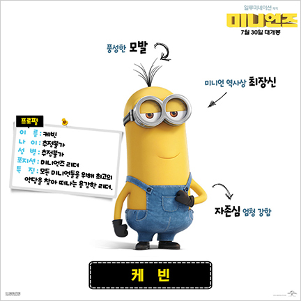
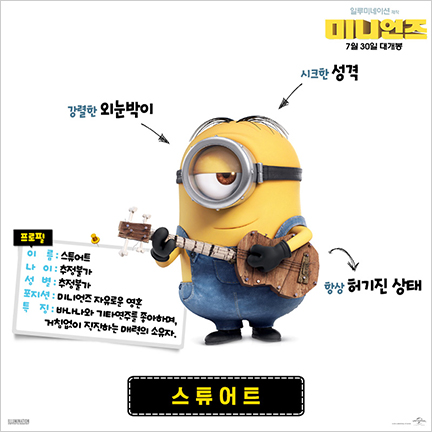

Kevin
2021년 7월 1일
길쭉한 체형을 지닌 미니언이며 자존심이 강한 성격이고 나름 선구자적인 면이 있는건지 다른 미니언들이 보스가 없어서 의지박약과 무기력증 상태에 빠져있을 때 새 보스를 찾아주려고 직접 나서기로 했다.
감독의 말에 의하면 큰 형(Big brother) 포지션이라고. 확실히 어른스러운 성격으로 영화 내내 밥과 스튜어트를 돌봐주느라 종종거리며 돌아다닌다. 그러나 미니언인 것은 변하지 않아서 놀 때는 거침없이(…) 논다. 작중 활약으로 여왕에게서 기사 작위를 받는다.
성별 불명이지만 작중에서 영 좋지 못한 곳을 가격당하는 것을 보면 아마도… 그리고 키는 165이다.
Stewart
2021년 7월 1일
평범한 체형과 외안을 지닌 미니언으로, 식탐이 꽤 있는 편이며 바나나에 아주 환장한다. 본의아니게 새 보스를 찾기 위한 파티원이 돼서 미니언들이 살던 곳을 떠난다.
그리고 배를 타고 있을 때 배가 고파서 케빈과 밥을 바나나로 착각하고 달려들었던 전적도 있으며, 도시에서 노란색의 소화전을 보고 여자 미니언으로 착각해서 들이대기도 하는 등 은근히 개그 캐릭터 같은 면모가 있다. 감독 인터뷰에서 스튜어트의 속성은 10대 청소년(teenager). 기타치는 것을 좋아하며 지미 핸드릭스 같은 당대 스타들을 동경하는 모습을 보인다.
참고로 스튜어트가 바지를 벗은 모습이 본편에서 나오는데(티 팬티를 입고 있었다.), 이 때 드러난 엉덩이가 은근히 매력적이다(…).
Bob
2021년 7월 1일

짤뚱한 체형을 지닌 미니언이고 홍채 이색증이 있어서 갈색 눈/녹색 눈의 오드아이이다. 선천적인 대머리인건지 아니면 어려서 머리카락이 아직 안 난건지는 몰라도 머리가 민둥민둥하다.
케빈이 파티원을 모을 때 자신이 나서겠다고 적극적으로 나섰고 다른 미니언들이 나서지 않자 어부지리로 얻어 걸린다. 그러나 적극적인 모습과 달리 소심한 성격이며 나이도 어린 건지 케빈에게 주로 붙어다니면서 의지하거나 케빈에게 업혀다니는 모습을 보여준다. "팀"이라는 이름의 곰돌이 인형을 언제나 꼭 안고 다닌다. 참고로 곰돌이 팀은 스칼렛도 탐냈다. 나중에 지하 감옥에서 탈출하던 도중 하수구에서 우연히 쥐를 발견하여 부치라는 이름을 지어주고 팀과 함께 친구가 된다.